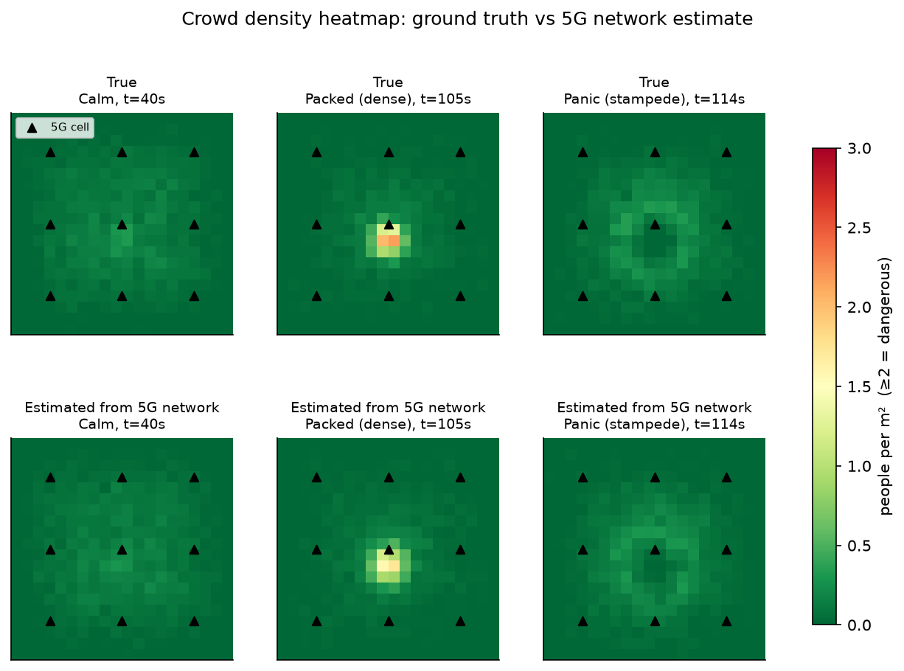

Multimodal Crowd Anomaly & Stampede-Risk Detection
using Video AI and 5G Network Data with Edge Computing
AI/ML project · November 2026
Problem
- Crowd crushes and stampedes develop in seconds
- Operators cannot watch every CCTV screen; late alerts are useless
- Goal: detect anomalies accurately and deliver alerts fast
- Problem statement: train an anomaly detector on public crowd video and compare edge vs cloud processing over 5G (MEC)
Our approach: two detectors + 5G edge
📷 CCTV cameras
video
📱 People's phones
5G network data
▼
📡 5G network with slicing
🚨 URLLC slice: safety cameras + alerts
👥 eMBB: public phone traffic
▼
⚡ MEC edge server (next to the 5G tower)
🧠 Model 1
video anomaly
🧠 Model 2
network crowd risk
🧠 Combined model
(video + 5G)
🚨 Alert to
security staff
🧠 ML decides: process here at the edge, or send to the cloud ▶
☁️ Cloud
v2 most accurate model (GPU)
storage, retraining
20-100 ms away
Where AI/ML is used
| # | AI/ML part | Technique |
|---|
| 1 | Video anomaly detection | Future-frame prediction U-Net (v1: autoencoder) |
| 2 | Edge-ready model | Knowledge distillation (16× fewer parameters) |
| 3 | Crowd risk from 5G data | XGBoost / LSTM on network time series |
| 4 | Detect from both at once | Combined model: video CNN + 5G branch, trained together on the same events |
| 5 | Edge or cloud? | XGBoost offloading decision |
5G roles: sensor (network data) · transport (URLLC slice) · compute (MEC edge)
Model 1: video anomaly detection (UCSD Ped2)
- Trained only on normal video
- v2 predicts the next frame: what it cannot predict = anomaly
- Worst-patch scoring for small objects
0.974
v2 prediction (final)
Accuracy vs speed: cloud model (v2) vs edge model
v2 is the most accurate but takes 105.9 ms per frame on a CPU, so it runs in the cloud (GPU: 4.1 ms); the small student model runs at the edge.
Model 2: crowd risk from 5G network data
- Simulated venue with 9 small cells, 800-2,600 people with phones
- Phones per cell, handovers, density and speed from 5G positioning
- Normal / dense / stampede
Where is the danger? Density heatmap from 5G

Combined model: same event, video + 5G
0.823
video only (macro-F1)
Camera can't see the danger → 5G covers it · few phones visible → video covers it · combined catches 97.1% of danger with 3.6% false alarms.
How the joint data is made
- One simulated crowd event drives both sensors
- 📷 CCTV camera films an 80 m × 80 m part of the venue
- 📡 5G network senses the same people's phones everywhere
- Hard cases: night, danger outside the camera view, few phones visible
- 300 events · video CNN + 5G branch trained together
Edge vs cloud over 5G

10 cameras: edge 7.2 ms vs cloud 58.7 ms
5G network slicing protects safety traffic
20 cameras, 90% of the uplink used by the public: 95th-percentile delay 9.8 ms with a URLLC slice vs 90.4 ms without.
ML decides: edge or cloud?
ML picks the right place in 94.0% of unseen situations, close to the best possible delay.
Limitations and future work
- 5G network data is simulated; validate on real aggregated operator data (e.g. Telecom Italia Milan)
- Edge/cloud study in Python; port the scenario to Simu5G (OMNeT++)
- Autoencoder learns "normal" per camera view
- Next: stronger video models, more datasets, RL-based offloading and slice control
Conclusion
Two independent AI detectors (video + 5G network), fused for reliability,
running at the 5G edge with a protected URLLC slice and ML-based offloading,
deliver accurate crowd-safety alerts in real time.
Thank you